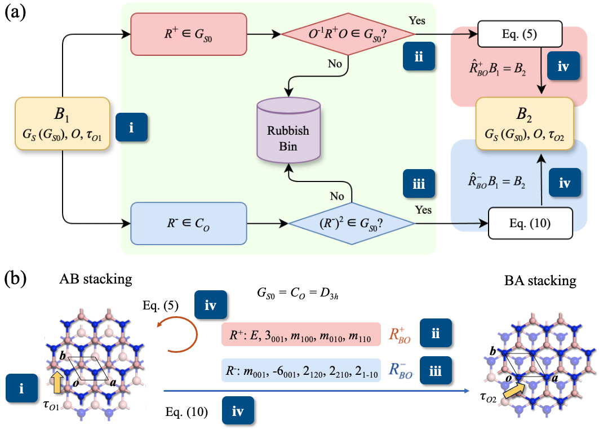
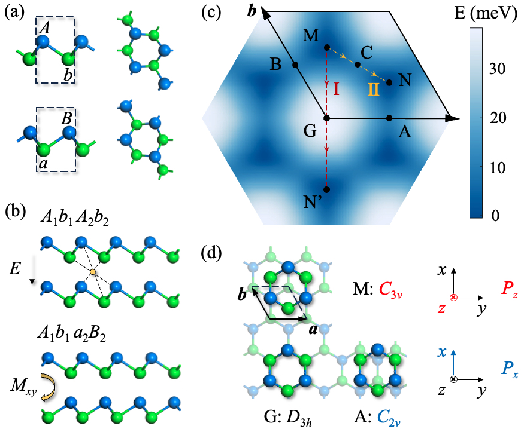

Xuan Wang
Master's Graduate in Epidemiology and Health Statistics
Sun Yat-sen University
I work on multimodal machine learning, wearable sensing, rehabilitation assessment, fall risk prediction, and gait disorder detection. My recent research combines sensor signals, 3D skeletal motion data, and interpretable learning methods for intelligent health assessment in aging and healthcare applications.
Selected Publications

A Novel Dynamic Latent Variables-Based Framework for Enhancing Freezing of Gait Detection in Parkinson's Disease Patients
Highlight:
Proposed a dynamic latent-variable framework to improve personalized and data-efficient FOG detection.
IEEE Journal of Biomedical and Health Informatics, 2025
FOG detection
Parkinson's disease
Wearable sensors

Sensor-Based Multifaceted Feature Extraction and Ensemble Elastic Net Approach for Assessing Fall Risk in Community-Dwelling Older Adults
Highlight:
Developed a sensor-based fall risk assessment pipeline using multifaceted feature extraction and ensemble learning.
IEEE Journal of Biomedical and Health Informatics, 2024
Fall risk prediction
Elderly health
Feature engineering

Identifying sensor-based parameters associated with fall risk in community-dwelling older adults: an investigation and interpretation of discriminatory parameters
Highlight:
Investigated interpretable sensor-derived parameters associated with fall risk in older adults.
BMC Geriatrics, 24(1):125, 2024
Interpretability
Sensors
Geriatrics

A Novel Graph Neural Network Based Approach for Influenza-Like Illness Nowcasting: Exploring the Interplay of Temporal, Geographical, and Functional Spatial Features
Highlight:
Explored graph neural network modeling for city-level influenza-like illness nowcasting with spatial feature analysis.
BMC Public Health, 25:408, 2025
Graph neural networks
Nowcasting
Public health
Projects
Wearable Sensor-based Freezing of Gait Detection in PD Patients
Integrated dynamic latent variable methods with threshold-based and SPC-style detection for personalized FOG monitoring.
A Novel Machine Learning Approach for Assessing Fall Risk
Developed an ensemble prediction framework for community-dwelling older adults based on wearable sensor data and multifaceted motion features.
Education & Awards
Education
Sep 2022 - Jun 2025
Sun Yat-sen University, Master of Epidemiology and Health Statistics, Outstanding Graduate (Top 3%)
Sep 2018 - Jun 2022
Ocean University of China, Bachelor of Science in Mathematics and Applied Mathematics, GPA: 3.69/4.00, Outstanding Graduate (Top 10%)
Selected Awards
Inmena Public Health Education Scholarship
First-Class Scholarship
Best Student Poster Award
Outstanding Paper Award
National Second Prize in Statistical Modeling Competition